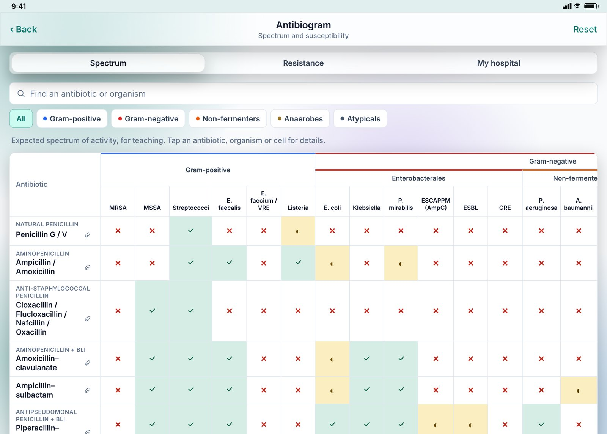
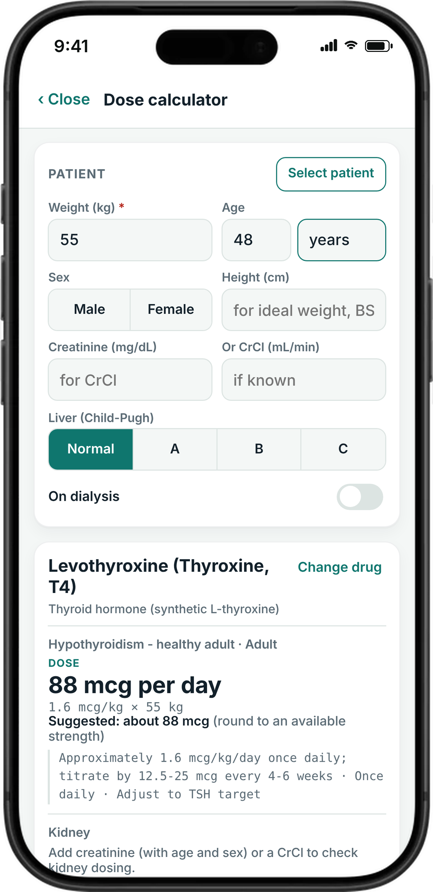
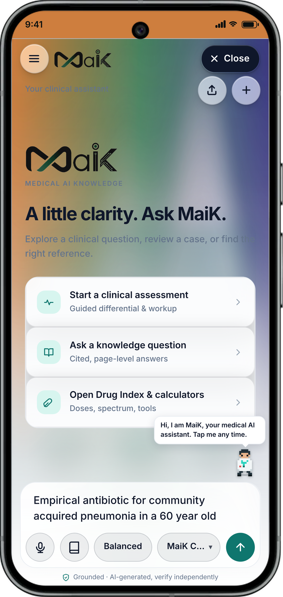
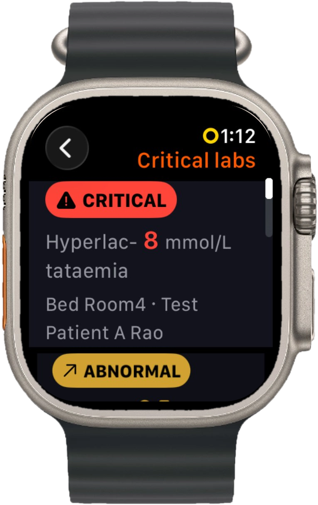

The answer, at the bedside.
Not in a library.
Dose for this patient's weight and kidneys. The antibiotic your region's bugs still respect. A cited answer from MaiK. One app on your phone, built on Indian data.




From the first question to the discharge
MaiK clinical AI
Ask in plain words. Cited answers grounded in our knowledge base. Clinical questions only.
Dose Calculator
Weight, age, CrCl and dialysis, Child-Pugh. From 1,532 drug monographs.
Indian antibiograms
ICMR, NARS-Net and hospital data by specimen and setting. Import your own hospital's.
Dx My Patient
Add findings, watch a live differential re-rank, with the next question to ask.
Drugs, scan and RxChoice
Scan a prescription, check QT, renal and bleeding interactions, see 4 price options for the same therapy.
Protocols and kits
253 bedside protocols in 19 subjects and 26 specialty kits for every branch.
OPD Queue and MaiK Scribe
Token queue, WhatsApp updates and an ambient scribe. Audio never leaves the phone.
ICU and Code Blue
Auto SOFA, APACHE II, NEWS2. Code Blue log with Apple Watch CPR assist.
Neonatal layer
One baby record, ten NICU tools: dosing, infusions, GIR, bilirubin, growth.
Oncology
260+ chemotherapy regimens with dosing, TNM staging, CTCAE and RECIST.
Documents in 3 languages
Consent forms, handouts, certificates and referrals in English, తెలుగు, हिन्दी.
FollowCare and colleagues
Post-discharge follow-up on WhatsApp, 26 pathways. Refer and hand over in-app.